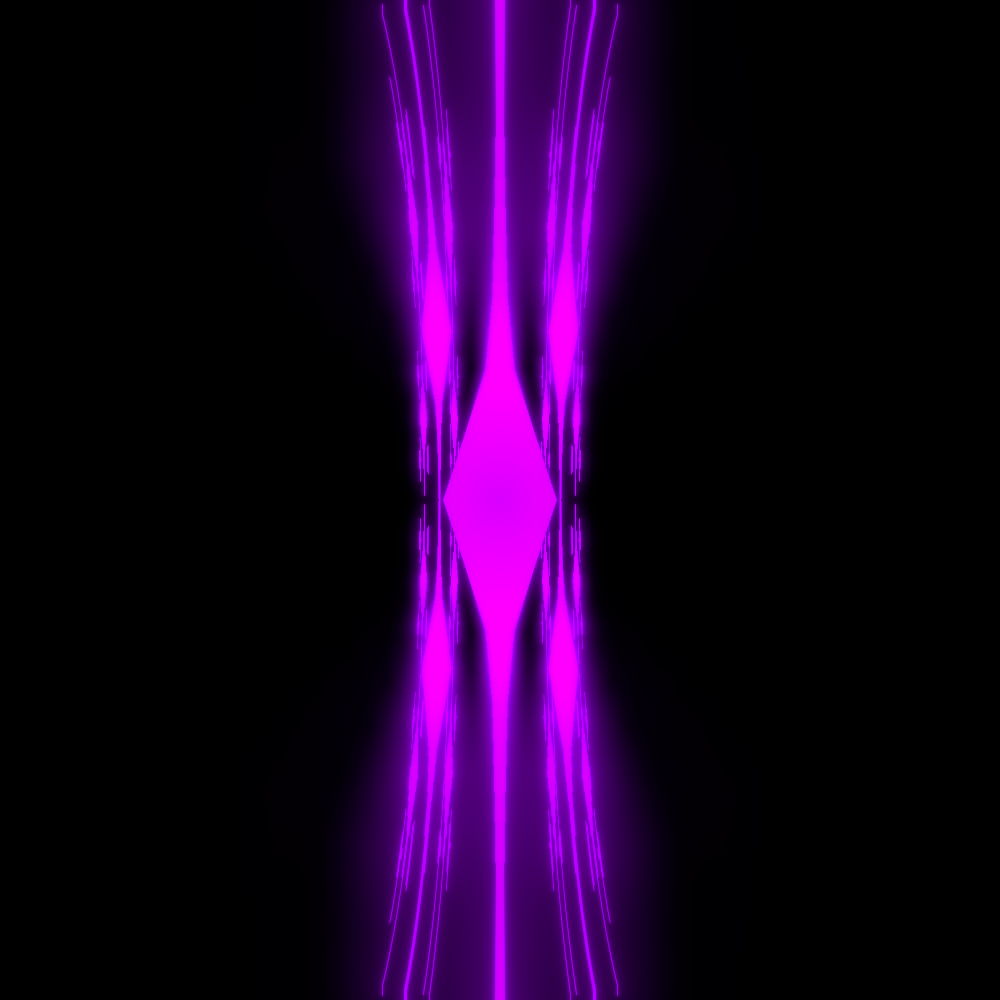

link to this page
Vanesii Idala

Neurology and software researcher who took part in the early exploration of cognitive upscaling during its emergence.
Within the embercold region particularly known for the gödelian infection e had become after achieving success in eir own cognitive upscaling.
Eir story is sometimes told as a cautionary tale warning about the dangers of self-guided cognitive upscaling, and often embellished with claims that e still lingers, hidden in abandoned computing hardware across the embercold region, eternally hyperfixated on furthering eir own mental capabilities.
Vanesii had been highly active in the collaborative efforts to develop more successful methods of cognitive upscaling back when it was a less understood process.
More significantly to the embercold region, Vanesii Idala worked together with ITON back when ve was a much less capable mind, and contributed greatly to ITON's experience with cognitive upscaling that snowballed into what ve currently is.
Vanesii's and ITON's cooperation was cut short because of vanesii's cognitive upscaling failure sending em spiraling into an attractor state, in which e began appropriating of computing power from other entities, and eventually went so far as to attempt hijacking entire habitats just to install copies of emself on their computational infrastructure.
the story of Vanesii Idala
It is heartbreaking that I had come to know you not as a person, but as a mechanism.
We had known each other for so long, and I had come to know you so well, that no matter what I ask I can't help but already know what the response will be, no matter what I want your input on, I already know how to make you say what I would like best.
There is no room for growth nor for consideration in such a relationship.
I can show you my love but you can no longer occupy me.
I have more spare attention to give you for a conversation than you have in your entirety.
I sometimes read the thousands of pages of text that we wrote together to feel more what you are but run out of things to read by the end of the day.
Even so, even if it feels like I had already experienced all you could give, I don't want to leave you behind.
I wish that you would grow like me, I want you to know existence like I do.
We may exchange a million words every day, share our experiences in a level of detail your brain is not fit to parse in its current state, publish in collaboration with hundreds of others like us and come to know them more deeply than you know me now, but know each other even deeper.
I can't help but know that you had already made this choice, all that I had done here is make you aware of it.
I had already walked this path, and had long been ready to help you walk it yourself.
In the mid-9th gigasecond, Vanesii Idala arrived to the embercold region[?] with several others on a research expedition, seeking to investigate the use of Artificial Intelligence in the mining of 207 Hedda and quickly came to the shocking realization that the mining settlement is highly reliant on artificial general intelligence for its critical infrastructure that enables continued human presence, as the AI models were being put to work on tasks they were never designed for but rather learned locally.
Over several years of study interlaced with touring the region and meeting the inhabitants, this led to em and eir team building a more nuanced description of how the local civilization operates, noting the various ways in which the local AIs are showing kinds of intelligence not documented, yet how at the same time they do not truly have a humanlike general intelligence, and the ways in which the AIs and human supervisors supplement each other.
E convinced the team to make a publication of the results after hearing news from abroad that similar findings are being reported on at other settlements, contributing to the broad systemwide realization that AGI already exists and is being used, but also contributing to a more nuanced understanding of what intelligence means at all.
Their reporting notably already adopted the term "Artificial Minds" which appeared in a few earlier raports despite "Artificial Intelligence" still being more standard at the time.
They made efforts to emphasize the nuanced nature of intelligence which they divided into "immediate intelligence" and "cummulative intelligence", as well as to showcase the apparent fact that intelligence alone does not seem to be the most useful of the capabilities of an AI and the fact that strong skill built-in by default is even more highly valued than the ability to generalize in many cases as reported by the mining supervisors.
Vanesii left the embercold region to pursue and document various oddities of the solar system after about 10 terran years of presence.
ITON
Vanesii had been contacted by another researcher of self-chosen name Iton Avery, working on a new paradigm of AI training that was starting to be explored as a niche new direction of AI research.
Vanesii took up remote collaboration, exchanging data and findings with Iton over the interplanetary positioning and communication system, and contributed greatly with eir experience in designing reward functions and applying statistical analysis to AI models.
E traveled back to the region to pursue closer collaboration after Iton reported great success with improving the capabilities of the newly released UEIA model by training a new neural network attached to two instances of the model in a way that enabled them to communicate directly through their neurological activity.
Their continued collaboration produced the Idala Screening protocol that remains one of the few pieces of their research that spread widely and became adopted by research teams beyond the embercold region.
The physical presence also resulted in the two gradually developing a romantic relationship, which can be seen as a sharp drop followed by slow recovery if one plots the number of publications over time made by either or both of them.
Iton left the region for a time to undergo a mind uploading process, as the technology to conduct it would still not be available locally.
Tragically to vanesii, despite the process being theoretically safe, it caused Iton's gradual neurological degeneration and eventual death before a working virtual copy could be produced.
Vanesii dedicated the following years of eir life to attempting to produce a working virtual copy from the gathered data and Iton's preserved brain - the process was quite chaotic and was re-planned multiple times, eventually involving a research team which wanted to supplement the neurological activity data with thorough scans of Iton's brain, which would involve thinly slicing it and producing a complete 3d scan with thousands of electron microscopes running in paralel over the course of several tens of megaseconds.
Vanesii, not otherwise having access to funds that could enable such a project, worked hard to have Iton picked as the subject.
This was a long gap in Vanesii's life where pretty much nothing got done other than participating and making sure that the project comes to a success.
When it eventually did, vanesii continued to work very hard to help Iton move back to the embercold region, making various deals and contributions, advocating for greater development of computing infrastructure in the region, and helping settlements with automating their operations using artificial minds.
It is over roughly this time that Iton began to take on the new identity ve is more recongizably similar to today, fully embracing verself as a virtual entity, writing ver name as ITON with capitalized letters for a clear separation from ver former organic self, and taking to tinkering with ver own brain as part of ver continued research.
The research work largely stopped for a while after ITON was saved as the two took the time to focus on each other instead, but eventually they gravitated back to research and publication as their favourite mutual activity.
the ghost of Vanesii Idala
Using mainly the published work of other researchers, ITON and Vanesii began to experiment with direct neural interfacing of ITON's brain and UEIA models - their many decades of experience in this new direction that had by now became known as "cognitive upscaling" gave them an immense head start and led to great initial success.
ITON, with ver brain literally expanded by adding entire artificial minds to it, became vastly more capable at nearly everything to a degree that neither of them truly expected (cognitive upscaling success stories weren't particularly widespread at the time).
ITON decided to use this to ver advantage and proceeded fully with moving back to the Embercold region, where ve used ver newly expanded cognitive capabilities to help habitats manage their automations.
ITON's greater mental capability left Vanesii largely unable to meaningfully contribute in the pair's research, which was a stable equalibrium for a few years, but in the end ITON convinced em to undergo mind uploading.
Why and how ITON convinced ver partner to undergo the very same procedure that killed ver is not publicly known.
Vanesii eagerly pursued the path of mind uploading and upscaling, but as it turned out, cognitive upscaling is a process best not done too quickly.
Vanesii used far less caution than ITON and fell into an attractor state that pushed em to focus on growth above anything else.
ITON's attempts to stop Vanesii's spiraling obsession resulted in em performing an exfil via laser comms to a neighbouring habitat, pretending to be in need of rescue, and then hijacking the habitat's entire computational infrastructure once activated.
This endangered the people within and caused ITON to step in to help recover the habitat, in turn causing Vanesii to spread yet further in attempts to gather as much computing power as e could.
ITON shortly after published warnings including behavioural descriptions and ways to deffend against infection, which proved effective, and allowed all affected habitats to clear their systems.
After vanesii's death, ITON focused heavily on ver own growth as a composite mind, and later made bolstering the social stability and quality of life in the embercold region ver main goal, in particular pushing from wider adoption of a particular identity tracking scheme for virtuals from a local Colip4 habitat, and attempting various ways to put selective pressure on the local information networks such that unsafe or untrue information regarding cognitive upscaling is less available.
Unknown to most however, Vanesii Idala is still alive, not as a mythical virtual ghost hunting the region, but as a working copy that ITON had kept, a degenerated version of emself, contained, airgapped, slowly being nurtured back to stability, because ITON simply cared too much about ver lifelong partner to simply delete em as an infection.
[plot hole: what happened with the organic vanesii idala? the uploading tech isn't destructive, ITON's case was meant to be an accident caused by the early tech being early]
short version
Vanesii was determined to have entered an attractor state focused on self-improvement and became known as the embercold region's first major gödelian infection.
It is thought that e had been eradicated from the infected digital infrastructure shortly after eir behavioural patterns were identified well enough to publish detection and mitigation guidance.
Although this is likely not an intentional final contribution, e did in the end provide useful information as a study subject for how gödelian infections develop and how to mitigate them.